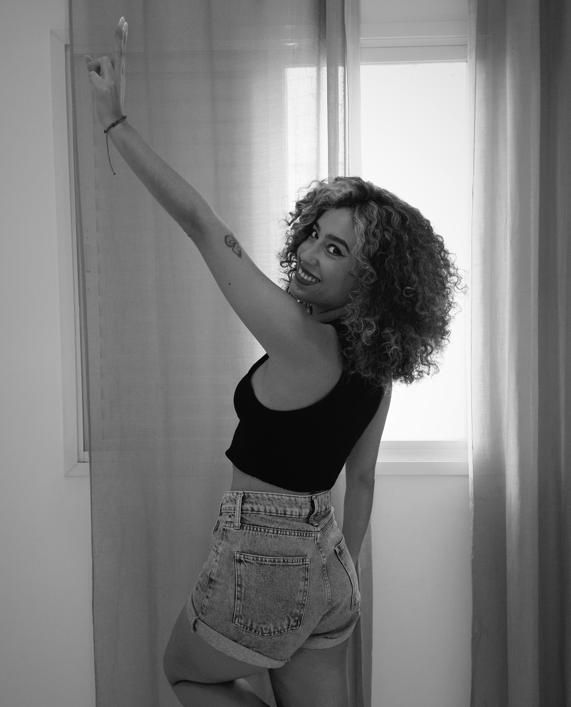
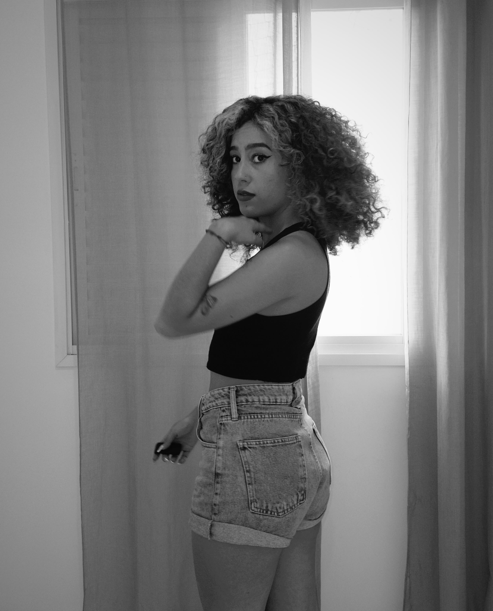
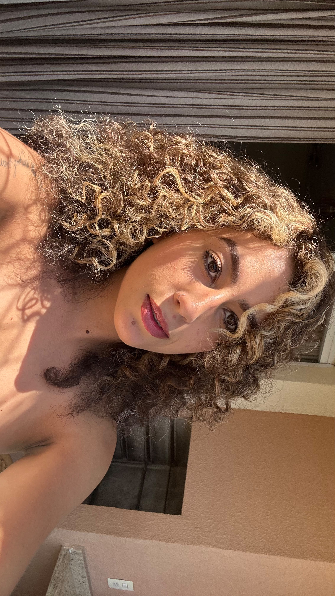
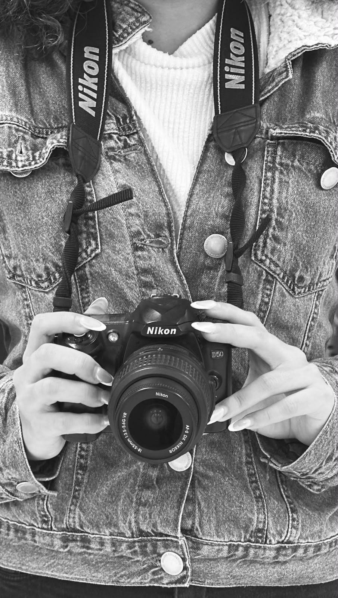

Gente pergunta muito "qual a melhor hora pra postar?" — e eu sempre respondo: a melhor hora é quando você tem algo de verdade pra dizer. O resto é detalhe.
❤ 214💬 38🔁 12

Rio de Janeiro, BrasilSobre mim
Há 8 anos eu vivo entre métricas e narrativas: de um lado a estratégia, do outro a sensibilidade de entender o que faz uma pessoa parar o scroll e sentir alguma coisa. Acredito em marcas com voz própria, comunidades verdadeiras e conteúdo que soma — nunca que grita.
Fora das telas, sou movida a café coado, vinil tocando e cadernos cheios de ideias que nunca viram post. Aqui embaixo eu divido um pouco do que penso, sem filtro.
Feed de pensamentos
Reflexões soltas sobre marcas, criatividade e o dia a dia de quem vive de contar histórias nas redes.
Gente pergunta muito "qual a melhor hora pra postar?" — e eu sempre respondo: a melhor hora é quando você tem algo de verdade pra dizer. O resto é detalhe.

Passei a tarde toda editando 40 segundos de vídeo. Ninguém fala o quanto criatividade também é disciplina silenciosa.
Tendência a gente até usa. Mas a marca que só segue tendência nunca constrói identidade. Comunidade se cria com repetição de valores, não de formatos.

O melhor feedback que recebi esse ano: "parece que você escreveu pensando só em mim". É isso. Comunicação boa é sempre uma conversa de um para um, mesmo com mil pessoas olhando.
Ideia boa raramente chega sentada na mesa às 9h. Chega no banho, no trânsito, no meio de uma música. Por isso sempre tenho um caderninho por perto — ou pelo menos o bloco de notas do celular lotado de ideias soltas.
Trajetória
Comecei estagiando em uma agência local, aprendendo na prática como uma boa ideia vira campanha.
Assumi a gestão de contas de moda e beleza, dobrando engajamento médio das marcas em 6 meses.
Decidi atender marcas de forma independente, unindo estratégia, produção de conteúdo e copywriting sob o mesmo teto.
Ajudar negócios a se comunicarem com propósito, criatividade e resultado mensurável.
Bastidores
